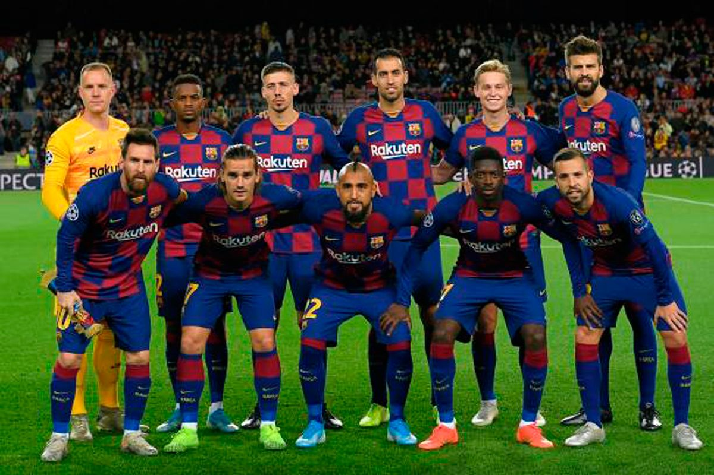
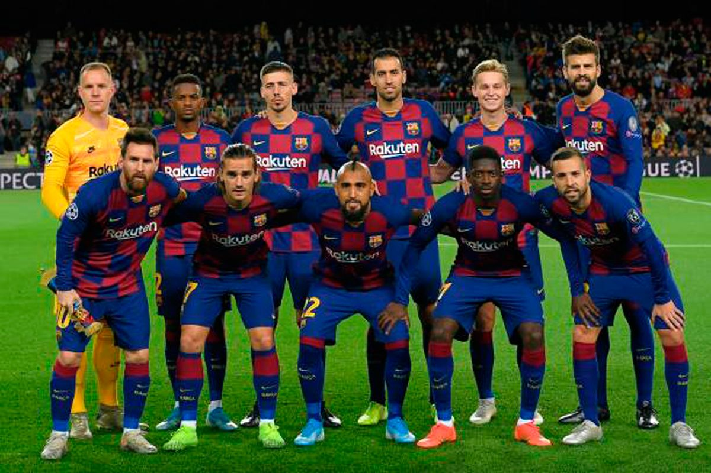

I would like to talk about my favorite football team, Its called Barcelona its a professional spanish team and considered one of the best teams in Europe
Barcelona has won a record 74 trophies
Barcelona is one of the most widely supported teams in the world, and the club has one of the largest social media following in the world among sports teams.
In 2011, the club became European champions again and won five trophies. This Barcelona team, which won 14 trophies in just 4 years under Pep Guardiola, is considered by some in the sport to be the greatest team of all time.
The club has a long-standing rivalry with Real Madrid, and matches between the two teams are referred to as El Clásico.
The highest paid sports team in the world, in November 2018 Barcelona became the first sports team with average first-team pay in excess of £10m ($13.8m) per year.
Lionel Messi is Barcelona’s all-time top scorer, and the highest ever scoring player for a single club.
Barcelona's all-time highest goalscorer in official competitions is Lionel Messi with 661 goals, surpassing Paulino Alcántara's 369 goals in March 2014, a record which stood for 87 years.In December 2020, Messi also overtook Pelé’s 643 goals for Santos to become the highest official scorer for a single club.Messi is the record goalscorer for Barcelona in European and international club competitions,and the record league scorer with 465 goals in La Liga. Four other players have managed to score over 100 league goals for Barcelona: César, Luis Suárez , László Kubala and Samuel Eto'o. Josep Samitier is the club's highest goalscorer in the Copa del Rey, with 65 goals.
Barcelona's stadium is called the camp nou is the largest stadium in Europe. The club's highest home attendance was 120,000 in a European Cup quarter-final against Juventus on 3 March 1986.The modernisation of Camp Nou during the 1990s and the introduction of all-seater stands means the record will not be broken for the foreseeable future as the current capacity of the stadium is 99,354.
Barcelona current starting squad are: Marc-André ter Stegen, Sergiño Dest, Gerard Piqué (3rd captain), Ronald Araújo, Sergio Busquets (vice-captain), Antoine Griezmann, Miralem Pjanić, Martin Braithwaite, Lionel Messi (captain), Ousmane Dembélé.
 
